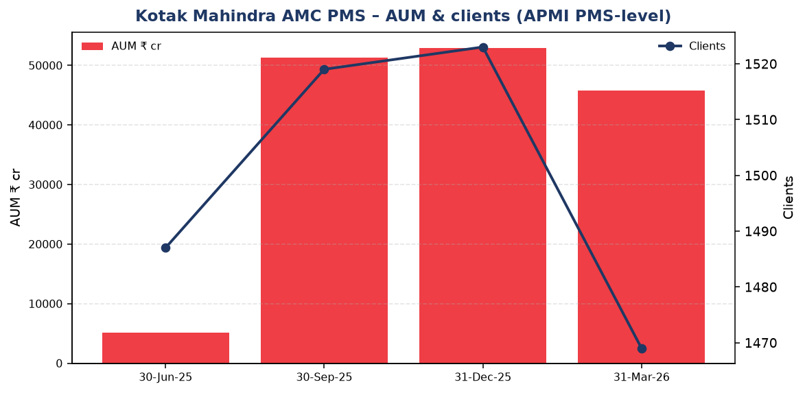
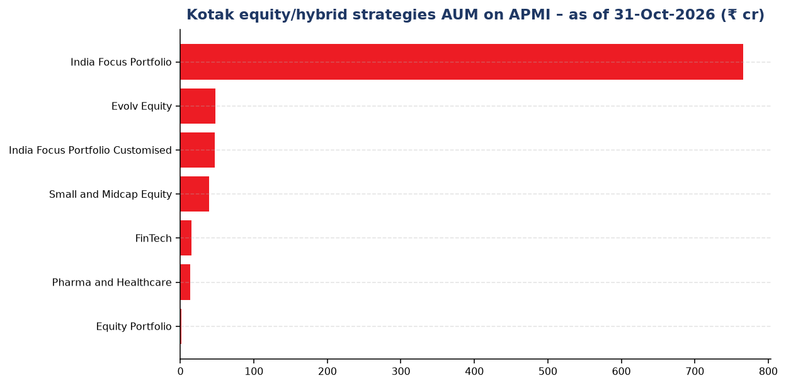
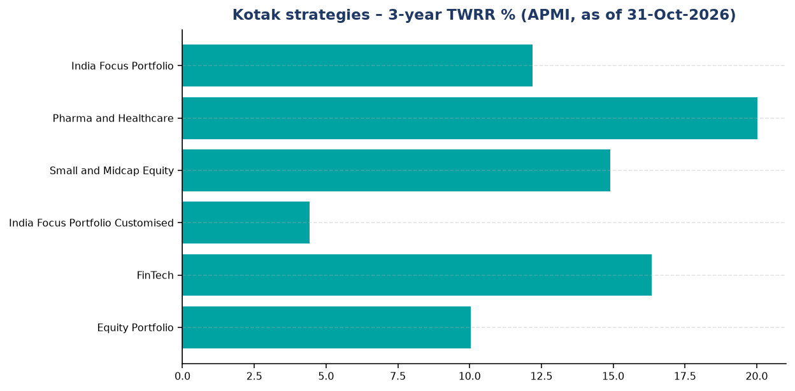

Source: APMI PMS-level files FY25-26 and FY26-27.

All 13 Kotak IAs reported in APMI's Oct-2026 performance table (equity, debt, multi-asset; discretionary and non-discretionary).

Source: APMI Investment Approach performance · as on 31-Oct-2026. Returns are TWRR as reported by the PM; IAs younger than 3 years omitted.
| As on | Clients | AUM ₹ cr |
|---|---|---|
| 30-Jun-2025 | 1,487 | 5,163.29 |
| 30-Sep-2025 | 1,519 | 51,351.73 |
| 31-Dec-2025 | 1,523 | 52,974.14 |
| 31-Mar-2026 | 1,469 | 45,806.73 |
| 30-Jun-2026 | 1,486 | 48,112.91 |
| 30-Sep-2026 | 1,511 | 44,834.43 |
Source: APMI AUM & Client Count Data – PMS Level (FY25-26, FY26-27). INP000000837 · registered 16-11-2015. KMAMC FY24-25 annual report: DPMS ₹1,951 cr, NDPMS ₹2,554 cr at 31-Mar-2025.
| Investment approach | Service | AUM ₹ cr | 1M | 3M | 6M | 1Y | 2Y | 3Y | 5Y | SI | 3Y category rank | APMI benchmark | Inception |
|---|---|---|---|---|---|---|---|---|---|---|---|---|---|
| Kotak KKORE NDPMS Investment Approach | Non-discretionary | 4,377.77 | -2.10 | -6.82 | 0.92 | -1.57 | 2.35 | 12.86 | 10.12 | 12.59 | #9/35 | BSE 500 TRI | 01/07/2021 |
| Kotak Evolv Plus Asset Allocation Investment Approach | Discretionary | 984.63 | -1.17 | -3.38 | -0.96 | -0.02 | 2.27 | 9.03 | NA | 8.39 | #29/37 | NSE Multi Asset Index 1 | 17/07/2023 |
| Kotak India Focus Portfolio Investment Approach | Discretionary | 765.61 | -4.67 | -8.88 | -6.12 | -4.50 | 0.48 | 12.19 | 10.25 | 14.00 | #44/222 | Nifty 50 TRI | 03/07/2012 |
| Kotak Evolv Multi Asset NDPMS Investment Approach | Non-discretionary | 556.85 | -3.04 | -4.78 | -1.48 | NA | NA | NA | NA | -2.73 | — | NSE Multi Asset Index 1 | 01/01/2026 |
| Kotak Pioneer Model Strategy Investment Approach Aggressive | Discretionary | 118.75 | -2.52 | -5.75 | -2.20 | 2.00 | 6.83 | 13.30 | NA | 12.95 | #8/37 | NSE Multi Asset Index 1 | 24/06/2022 |
| Kotak India Focus Portfolio Investment Approach Customised | Discretionary | 46.64 | -2.85 | -9.07 | -2.62 | -3.06 | -8.45 | 4.43 | 7.04 | 7.95 | #187/222 | Nifty 50 TRI | 22/04/2015 |
| Kotak Pioneer Model Strategy Investment Approach Moderate | Discretionary | 30.09 | -1.69 | -3.49 | -0.83 | 4.57 | 7.81 | 12.06 | NA | 11.32 | #11/37 | NSE Multi Asset Index 1 | 30/06/2022 |
| Kotak Pioneer Model Strategy Investment Approach Conservative | Discretionary | 13.80 | -0.87 | -1.04 | 0.30 | 17.73 | 14.00 | 13.96 | NA | 11.95 | #6/37 | NSE Multi Asset Index 1 | 30/06/2022 |
| Kotak Evolv Liquid Investment Approach | Discretionary | 8.31 | 0.50 | 1.40 | 2.75 | 5.84 | 6.00 | 6.48 | NA | 6.58 | #5/10 | Nifty Medium to Long Duration Debt Index | 12/07/2023 |
| Kotak Evolv Equity NDPMS Investment Approach | Non-discretionary | 7.58 | 0.06 | -5.22 | -0.29 | NA | NA | NA | NA | 1.01 | — | BSE 500 TRI | 01/04/2026 |
| Kotak Evolv Liquid NDPMS Investment Approach | Non-discretionary | 4.94 | 0.48 | 1.44 | 0.72 | NA | NA | NA | NA | 2.09 | — | Nifty Medium to Long Duration Debt Index | 01/01/2026 |
| Kotak Liquid Investment Approach | Discretionary | 1.87 | 0.45 | 1.37 | 2.95 | 5.95 | 6.11 | 6.44 | NA | 6.49 | #6/10 | Nifty Medium to Long Duration Debt Index | 21/03/2023 |
| Kotak Equity Portfolio Investment Approach | Discretionary | 0.93 | -3.27 | -9.44 | -4.64 | -4.11 | -1.55 | 10.04 | NA | 11.97 | #80/222 | Nifty 50 TRI | 22/04/2022 |
Source: APMI IA Performance (as on 31-Oct-2026); inception dates from APMI Insights. Periods >1Y annualised. NA = not reported. Category = same strategy type, service type and APMI benchmark (see Peer set). For the like-for-like view with a 3-year record and AUM ≥ ₹250 cr, see Level playing field. Pharma & Healthcare, Small & Midcap, FinTech and Evolv Equity (DPMS) IAs shown in the previous build do not appear in APMI's Oct-2026 performance table (their IaInsight pages show older monthly data), so they are no longer listed.